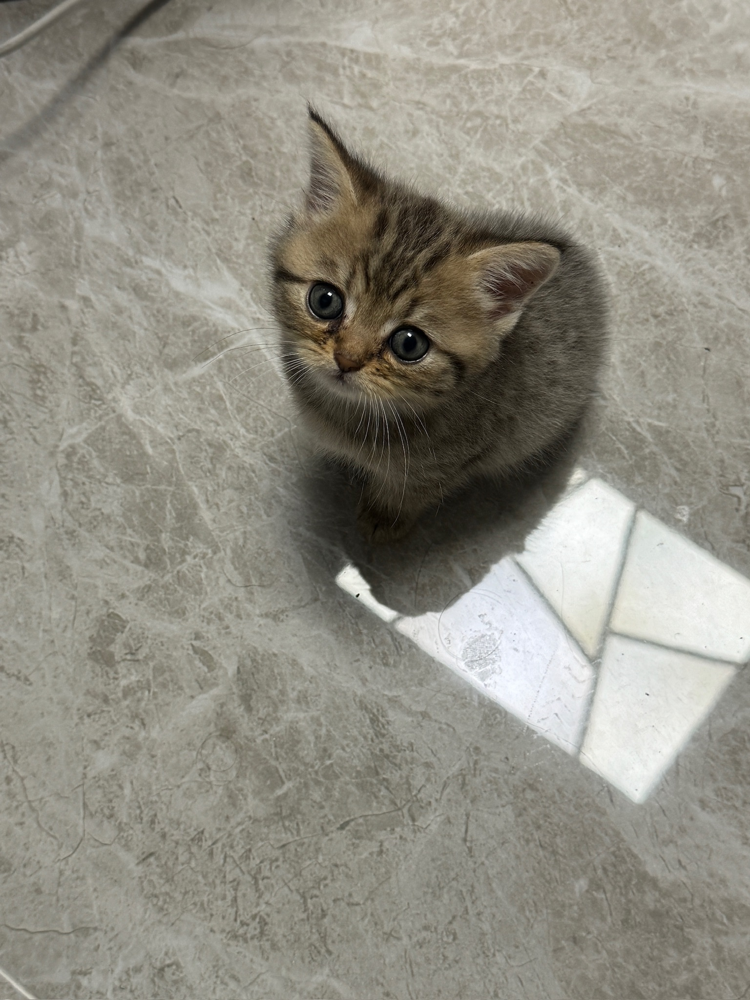
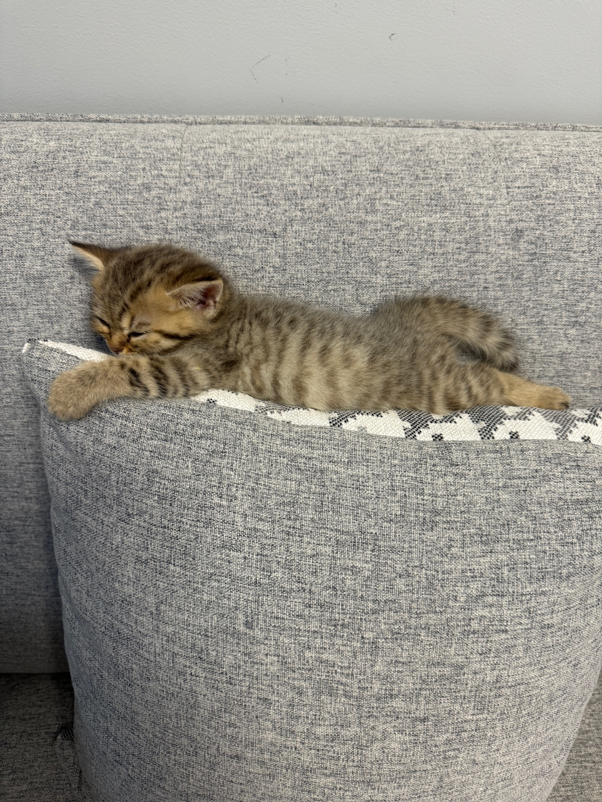
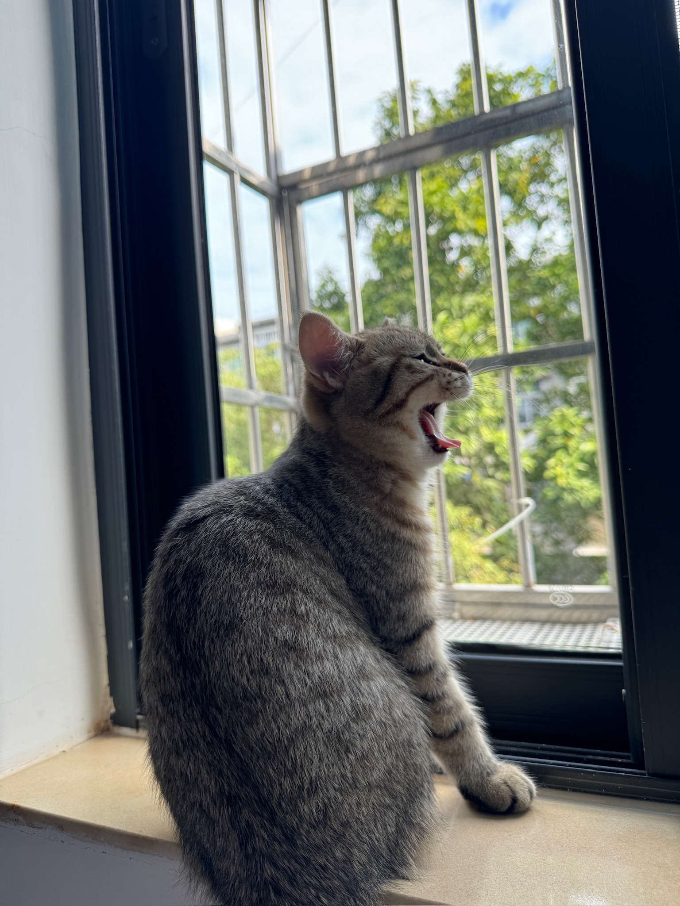
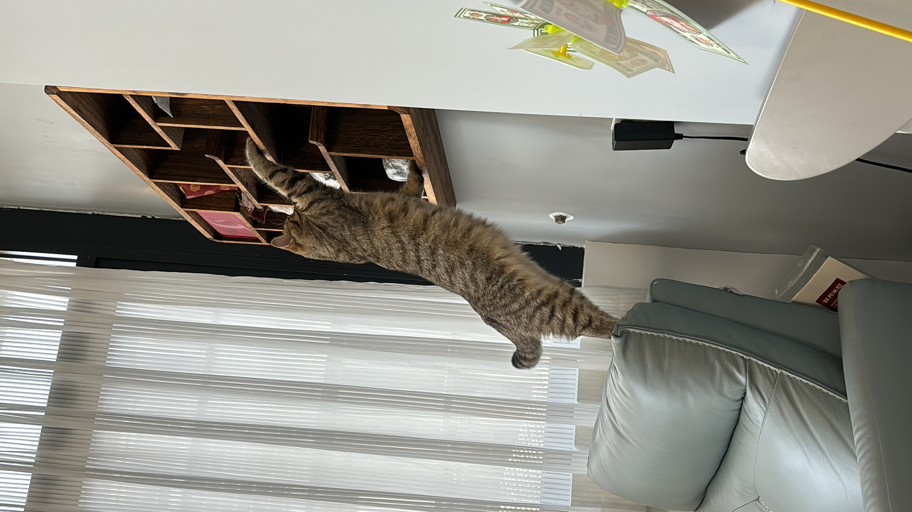
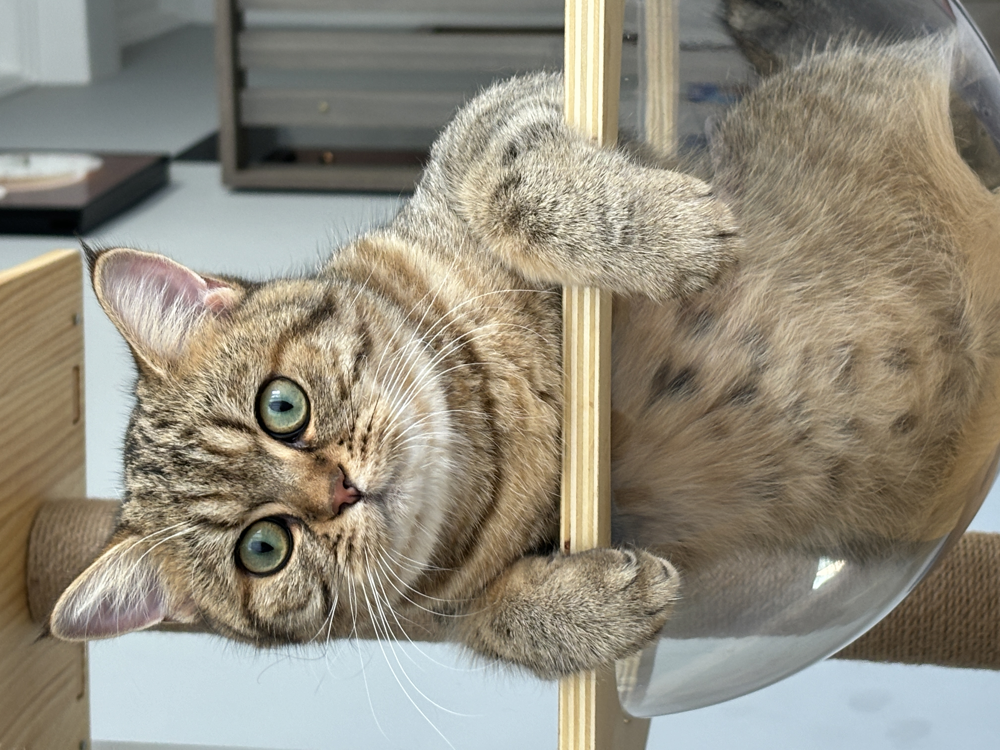

2025年11月7日
50天 · 约1个月

小小的你，刚来到这个世界不久，眼睛里满是对世界的好奇~
2025年11月8日
51天 · 约1个月

一天一天在长大，开始学会调皮捣蛋了~
2025年12月22日
95天 · 约3个月
三个月啦！已经是个活泼好动的小家伙了~
2026年2月1日
136天 · 约4个月

四个月了，越来越有自己的小性格了~
2026年3月14日
177天 · 约6个月

半岁啦！已经是个小少女了，越来越漂亮~
2026年3月14日
177天 · 约6个月

同一天的另一张照片，记录你的不同姿态~
2026年4月29日
223天 · 约7个月
七个月了，已经是个大孩子啦！
2026年6月3日
258天 · 约8个月

八个多月了，从小奶猫长成了小美女，时间过得真快呀~